[02] Chapter 02 of 05 / fig. 02 / sugar to polymer
Biomolecules as Data Structures
Life is built from four main molecule classes. We treat them as storage, structure and information formats.
6 sessionsCLA-1
S1
Carbohydrates/lipids as energy and membrane storage
2 marks
Carbohydrates are naturally occurring organic compounds composed primarily of
4 to 5 marks
Write the definition, then any 4 or 5 of these points, one line each: Introduction; Why Does a Cell Need Energy?; Carbohydrates; Biological Importance- Carbohydrates; Classification; Journey of a Carbohydrate in the human body.
12 to 13 marks: answer in this order
Introduction
Why Does a Cell Need Energy?
Carbohydrates
Biological Importance- Carbohydrates
Classification
Journey of a Carbohydrate in the human body
ATP—The Universal Energy Currency
Glycogen: Nature's Cache Memory
Lipids
Why Are Lipids Better Energy Stores?
Characteristics of Lipids
Types of Lipids- 4 types
Finish with a labelled diagram or table, one real example, one application and a one-line conclusion.
Practice questions
2 marks: Define carbohydrates. What is a glycosidic bond?
5 marks: Classify carbohydrates with examples.
12 marks: Explain carbohydrates and lipids as energy and membrane storage molecules, with classification, types and functions.
Complete notes
Introduction
Every engineering system requires three things:
Energy
Storage
Protection
Similarly, every living cell requires
Energy
Information
Structure
Communication
Nature solved these engineering challenges nearly 3.8 billion years before the invention of computers.
Cells use biomolecules to accomplish these tasks.
Figure
Biomolecule
Function
Engineering Analogy
Carbohydrates
Immediate energy
Laptop battery
Lipids
Long-term storage
Power bank
Proteins
Functional machines
CPU/Software
DNA/RNA
Information storage
Hard disk/Cloud database
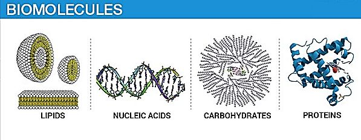
Why Does a Cell Need Energy?
Imagine your laptop. Without electricity,
CPU stops
RAM clears
Programs terminate
Communication ceases
Similarly, without ATP,
muscles stop contracting
DNA cannot replicate
proteins cannot be synthesized
neurons cannot transmit signals
Life requires continuous energy production.
Carbohydrates
Definition
Carbohydrates are naturally occurring organic compounds composed primarily of
Carbon
Hydrogen
Oxygen
m represents the number of carbon atoms. N represents the number of water molecules
Historically, their empirical formula resembles Carbon and water hence called Carbohydrates
Eg:- Glucose C₆H₁₂O₆ which approximates ( C(H₂O))₆ where m=6 and n=6
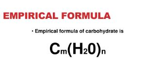
Biological Importance- Carbohydrates
Carbohydrates
supply energy
store energy
provide structural support
assist in cell recognition
participate in signaling pathways
Approximately 60–70% of daily human energy comes from carbohydrates in a balanced diet.
2. Disaccharides Composed of two monosaccharides joined by a glycosidic bond. The creation of a glycosidic bond occurs through condensation, also known as dehydration synthesis. This reaction involves joining two monosaccharide molecules and releasing a single water molecule.
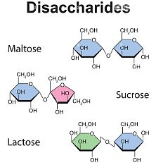
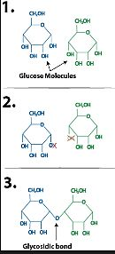
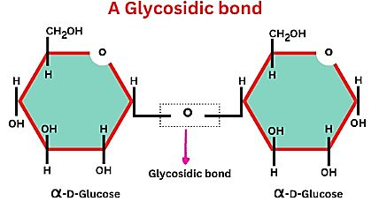
Journey of a Carbohydrate in the human body
Consider eating a slice of bread.
Bread
↓
Starch
↓
Digestive enzymes
↓
Glucose
↓
Blood
↓
Cells
↓
Mitochondria
↓
ATP
↓
Cellular work
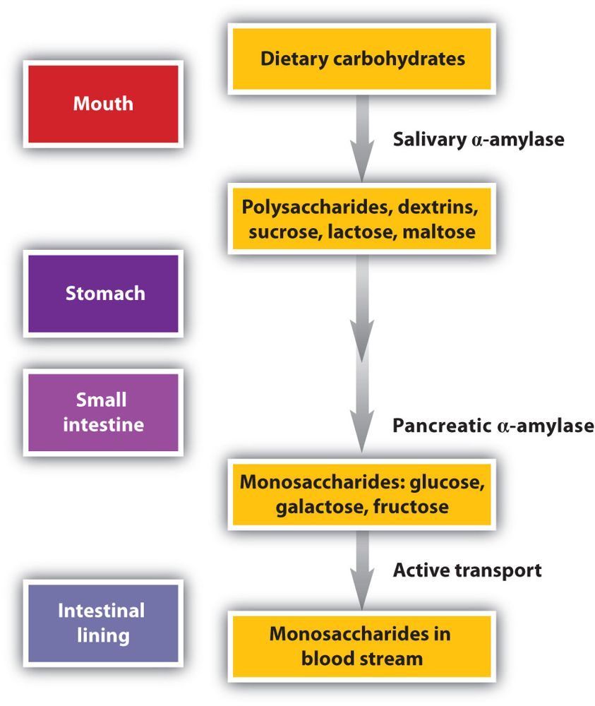
ATP—The Universal Energy Currency
ATP stands for Adenosine Triphosphate
It consists of
Adenine
ribose sugar,
three phosphate groups
Energy is stored in phosphate bonds.
When ATP loses one phosphate,
ATP → ADP + Pi + Energy
This released energy powers virtually every cellular process.
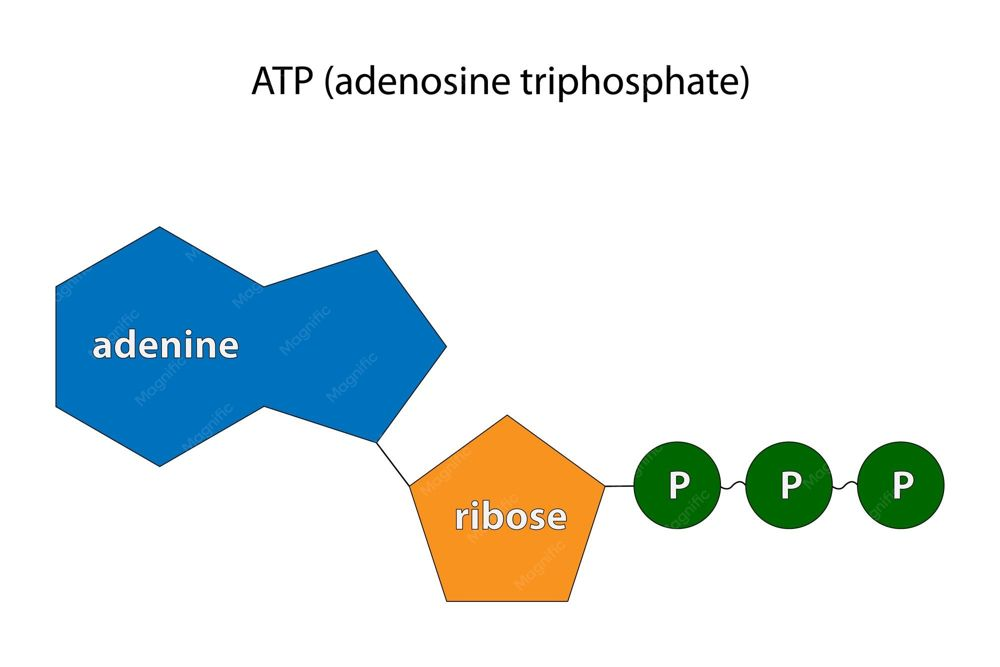
Glycogen: Nature's Cache Memory
Humans cannot store unlimited glucose in the bloodstream.
The liver converts excess glucose into glycogen.
When energy is required,
glycogen
↓
glucose
↓
ATP
This resembles
CPU Cache
↓
Immediate access
rather than
Hard Disk ( Slow retrieval)
After a meal, excess glucose is converted into glycogen and stored primarily in the liver and skeletal muscles. During fasting or prolonged exercise, glycogen is broken down back into glucose, thereby maintaining a steady supply of energy to vital organs.
This sophisticated regulation prevents dangerous fluctuations in blood glucose levels and ensures that cells receive energy whenever required.
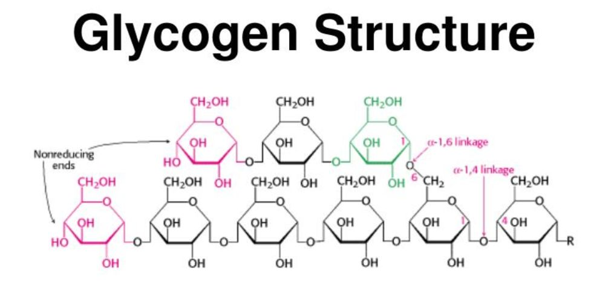
Lipids
Definition
Lipids are hydrophobic organic molecules composed mainly of
Carbon
Hydrogen
Oxygen
Some lipids also contain
Phosphorus
Nitrogen
They are insoluble in water but soluble in organic solvents.
Soluble in organic solvents such as ether, chloroform, and benzene
Lipids are broken down slowly and provide sustained energy over longer periods.
This is why the human body stores excess dietary energy as fat rather than glucose.
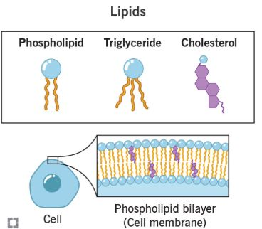
Why Are Lipids Better Energy Stores?
Lipids contain more carbon-carbon bonds.
Breaking these bonds releases more electrons, which ultimately generate more ATP.
Thus, one gram of fat stores more than twice the energy of carbohydrates.
Molecule
Energy
Carbohydrates/ Proteins
4 kcal/g
Lipids
9 kcal/g
Characteristics of Lipids
Although lipids include many different molecules, they share several common characteristics.
They are insoluble in water but dissolve readily in non-polar organic solvents.
They contain a high proportion of carbon and hydrogen atoms.
They provide approximately 9 kcal of energy per gram, compared to 4 kcal per gram for carbohydrates.
They serve both structural and functional roles in living organisms.
They are stored mainly in adipose (fat) tissue in animals.
Figure
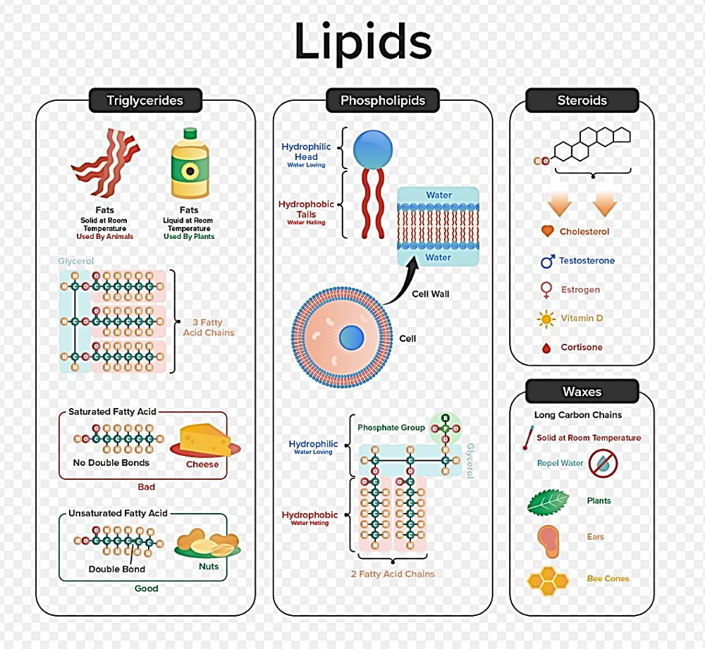
Types of Lipids- 4 types
1. Triglycerides
Triglycerides are the most abundant lipids in the human body and represent the primary form of stored fat.
They consist of one glycerol molecule attached to three fatty acid molecules through ester bonds.
Whenever we consume more calories than our body requires, the excess glucose is converted into triglycerides and stored in adipose tissue. During fasting or prolonged exercise, these triglycerides are broken down to release fatty acids, which are then oxidized to produce ATP.
Functions of Triglycerides
Store excess energy
Provide insulation against cold
Protect internal organs from mechanical injury
Supply energy during starvation and prolonged exercise
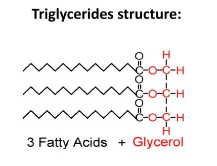
Types of Lipids- 4 types
2. Phospholipids
Phospholipids are among the most important lipids because they form the structural foundation of all cell membranes. Unlike triglycerides, phospholipids contain:
One glycerol molecule
Two fatty acid chains
One phosphate-containing group
This unique structure gives phospholipids two distinct regions:
Hydrophilic (water-loving) head
Hydrophobic (water-fearing) tails
Because of this dual nature, phospholipids are described as amphipathic molecules.
When placed in water, phospholipids spontaneously arrange themselves into a bilayer, with the hydrophilic heads facing outward toward water and the hydrophobic tails pointing
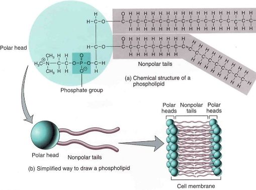
Types of Lipids- 4 types
3. Steroids
Steroids differ structurally from triglycerides and phospholipids because they contain four interconnected carbon rings rather than long fatty acid chains.
One of the best-known steroids is cholesterol, which is often misunderstood. Although excessive cholesterol levels are associated with cardiovascular disease, cholesterol is also an essential molecule that performs several important biological functions.
Biological Functions of Cholesterol
Maintains cell membrane stability
Serves as a precursor for steroid hormones
Required for the synthesis of vitamin D
Essential for the production of bile salts that aid fat digestion
Examples of steroid hormones include:
Testosterone
Estrogen
Cortisol
Progesterone
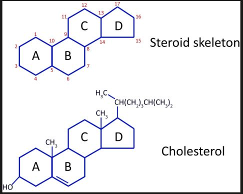
Types of Lipids- 4 types
4. Waxes
Waxes are complex lipids formed by the combination of long-chain fatty acids and long-chain alcohols. They primarily serve protective functions rather than energy storage.
Examples
Ear wax in humans
Wax coating on plant leaves
Beeswax produced by honeybees
Functions
Prevent water loss
Protect against microbial infection
Reduce mechanical damage
Waterproof surfaces
Plants growing in hot environments possess a thick waxy coating that minimizes water loss through evaporation.
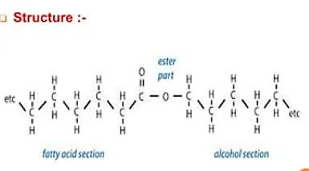
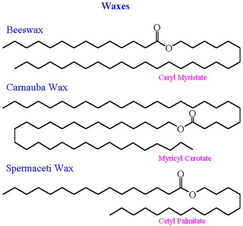
S2
Proteins/nucleic acids as functional data structures
2 marks
Proteins are the most versatile biomolecules found in living organisms.
4 to 5 marks
Write the definition, then any 4 or 5 of these points, one line each: Proteins – The Functional Machines of the Cell; Characteristics of Proteins; Functions of Proteins; 2. Structural Support; 4. Communication; 5. Defense.
12 to 13 marks: answer in this order
Proteins – The Functional Machines of the Cell
Characteristics of Proteins
Functions of Proteins
2. Structural Support
4. Communication
5. Defense
Nucleic Acids – The Information Storage Molecules
DNA – The Biological Database
Each strand contains four nitrogenous bases:
The Central Dogma of Molecular Biology
RNA – The Information Messenger
Functions of Nucleic Acids
Nucleic Acids as Functional Data Structures
Finish with a labelled diagram or table, one real example, one application and a one-line conclusion.
Practice questions
2 marks: State the central dogma.
5 marks: Write short notes on DNA structure and the types of RNA.
12 marks: Explain proteins and nucleic acids as functional data structures, with structure, functions and engineering analogies.
Complete notes
Proteins – The Functional Machines of the Cell
Proteins are the most versatile biomolecules found in living organisms. Nearly every biological activity depends on proteins.
They act as enzymes, hormones, transport molecules, structural components, antibodies, and molecular motors.
Every protein is built from smaller molecules called amino acids.
Twenty different amino acids combine in various sequences to produce millions of unique proteins,
The sequence of amino acids determines the three-dimensional structure of the protein, and its structure ultimately determines its function.
For example, hemoglobin transports oxygen because of its unique three-dimensional structure, whereas collagen provides strength to skin and bones because its structure is long, fibrous, and highly resistant to stretching.
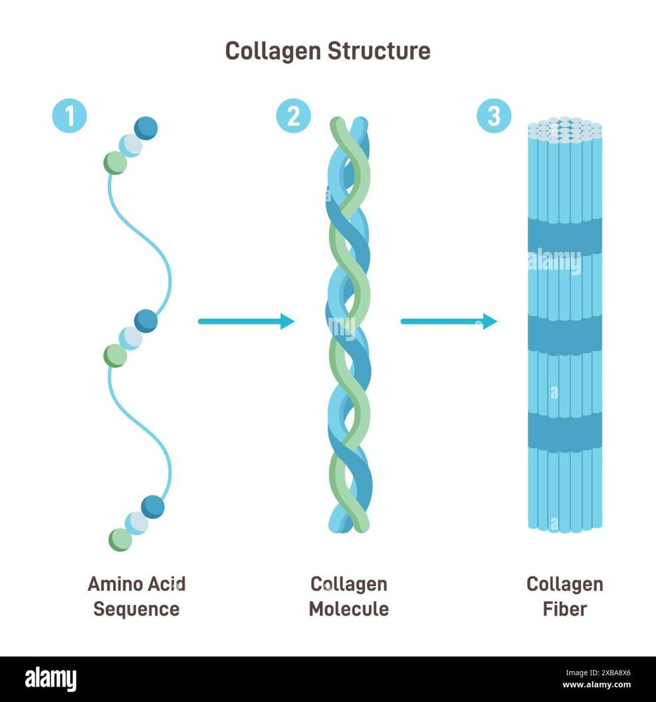
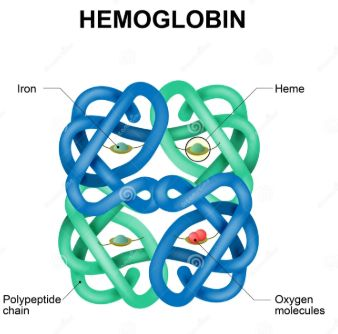
Characteristics of Proteins
They are polymers composed of amino acids.
They contain carbon, hydrogen, oxygen, nitrogen, and sometimes sulfur.
Their structure determines their biological function.
They perform most of the work inside the cell.
They are continuously synthesized and degraded according to the cell's needs.
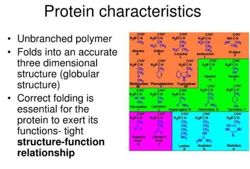
Figure
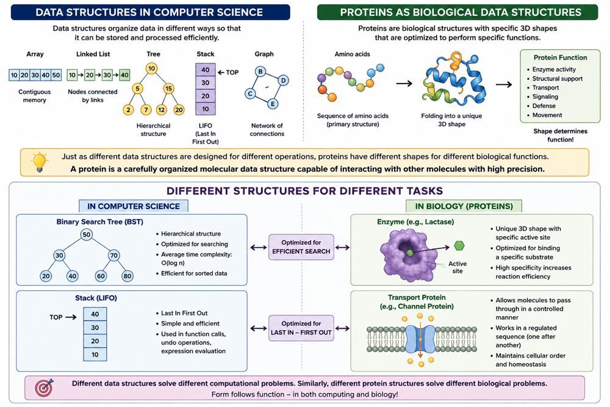
Functions of Proteins
Proteins perform an astonishing variety of functions within living organisms.
1. Catalysis
Many proteins function as enzymes that accelerate biochemical reactions.
Examples include:
Amylase – digests starch
Pepsin – digests proteins
DNA polymerase – synthesizes DNA
Without enzymes, most biochemical reactions would occur too slowly to support life.
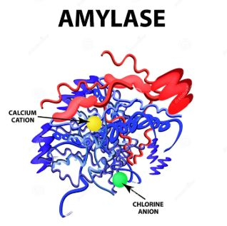
2. Structural Support
Certain proteins provide mechanical strength to cells and tissues.
Examples:
Collagen – connective tissue
Keratin – hair and nails
Elastin – skin elasticity
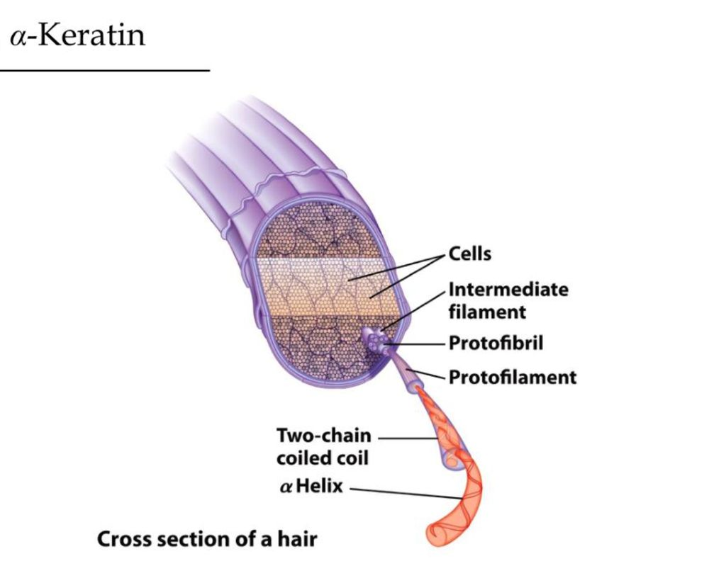
Figure
3. Transport
Some proteins transport molecules throughout the body.
Example:
Hemoglobin carries oxygen from the lungs to body tissues.
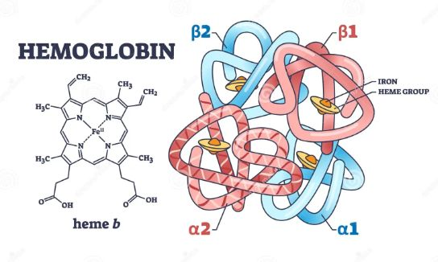
4. Communication
Protein hormones coordinate activities between organs.
Examples:
Insulin
Glucagon
Growth hormone
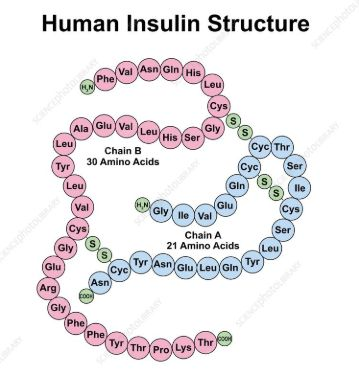
5. Defense
Antibodies recognize and neutralize harmful microorganisms.
Without antibodies, the immune system would be unable to protect the body against infections.
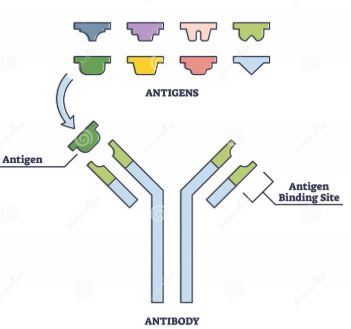
Nucleic Acids – The Information Storage Molecules
While proteins perform cellular work, nucleic acids store and transmit biological information.
Every living organism contains two major nucleic acids:
DNA (Deoxyribonucleic Acid)
RNA (Ribonucleic Acid)
These molecules ensure that biological information is accurately preserved and transmitted from one generation to the next.
Without nucleic acids, cells would have no instructions for producing proteins.
DNA (Deoxyribonucleic Acid) is the primary hereditary material in almost all living organisms. It carries the complete set of genetic instructions required for growth, development, reproduction, and maintenance of life.
The DNA molecule consists of two long polynucleotide chains twisted around each other to form the famous double helix
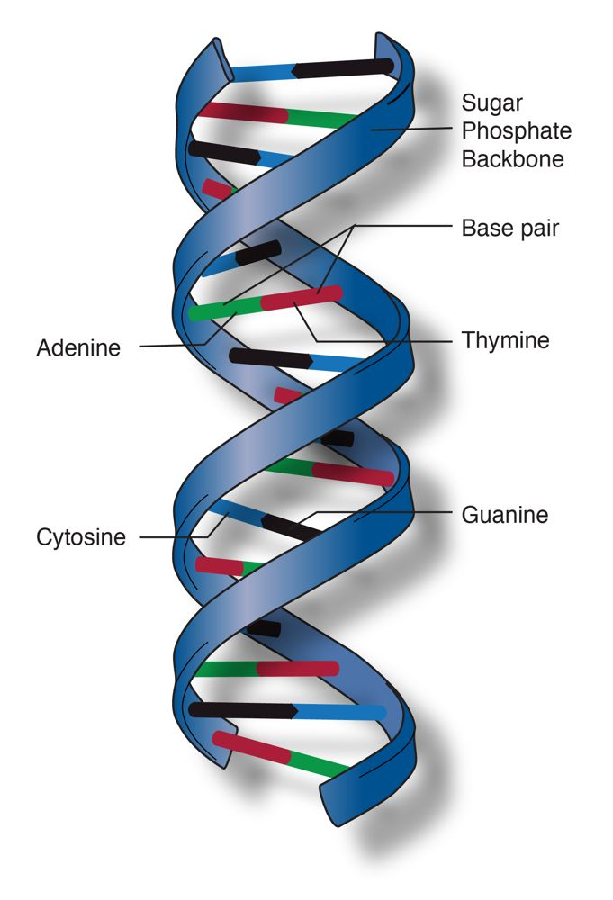
DNA – The Biological Database
DNA is often described as the blueprint of life because it contains the complete genetic information required to build and maintain an organism.
A single human cell contains approximately 3.2 billion base pairs of DNA, organized into 23 pairs of chromosomes.
This enormous amount of information is compressed into a nucleus only a few micrometers in diameter.
The DNA molecule consists of two complementary strands twisted into a double helix.
DNA molecules are extremely large, and they are constructed from small repeating units known as nucleotides.
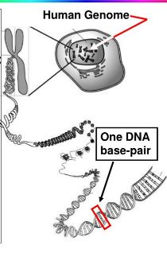
Each strand contains four nitrogenous bases:
Adenine (A)
Thymine (T)
Guanine (G)
Cytosine (C)
Every nucleotide consists of three components:
A nitrogenous base
A five-carbon sugar
A phosphate group
These bases follow strict pairing rules:
A pairs with T
G pairs with C
This complementary pairing ensures accurate replication of genetic information.
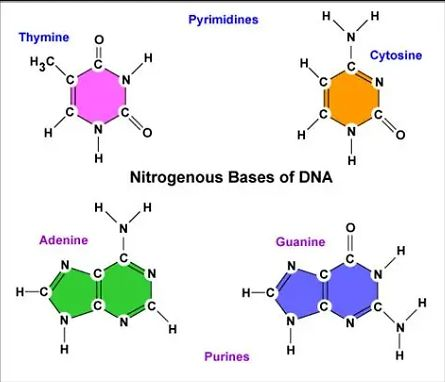
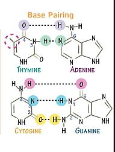
The Central Dogma of Molecular Biology
The flow of genetic information follows a well-defined pathway known as the Central Dogma.
DNA
↓ Transcription
RNA
↓ Translation
Protein
This sequence explains how stored genetic information is converted into functional molecules.
From a computing perspective:
DNA is the source code.
Transcription copies the required code.
RNA acts as the temporary instruction file.
Translation converts the instructions into executable form
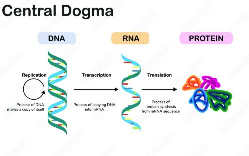
RNA – The Information Messenger
Unlike DNA, RNA is usually single-stranded and functions as the intermediary between DNA and proteins.
RNA carries genetic instructions from the nucleus to ribosomes, where proteins are synthesized.
There are three major types of RNA: mRNA, rRNA, tRNA
RNA is temporary.
Once its job is complete, it is degraded,
allowing cells to rapidly adjust protein production according to changing conditions.
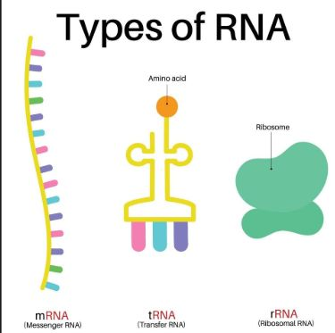
Figure
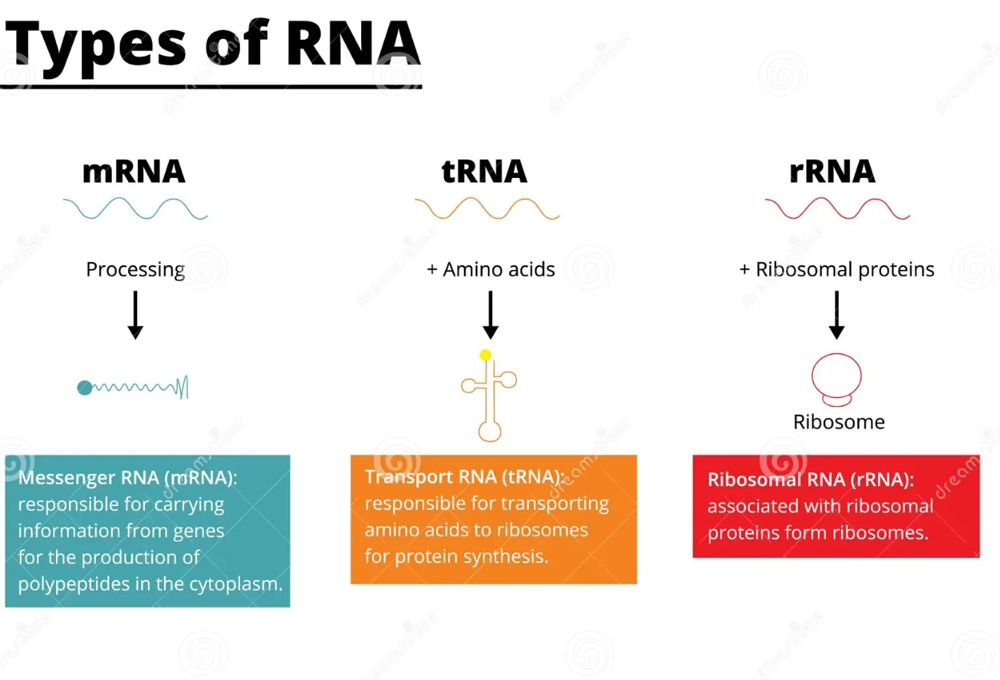
Functions of Nucleic Acids
Nucleic acids perform several essential functions that ensure the continuity of life.
They store hereditary information.
They transmit genetic information from one generation to the next.
They direct the synthesis of proteins.
They regulate cellular activities by controlling gene expression.
They contribute to growth, development, and reproduction.
They enable organisms to adapt and evolve through genetic variation.
Nucleic Acids as Functional Data Structures
A data structure must satisfy three fundamental requirements:
It must store information efficiently.
It must allow rapid retrieval of information.
It must maintain data integrity during storage and transmission.
DNA fulfills all three requirements exceptionally well.
The sequence of nitrogenous bases—adenine (A), thymine (T), guanine (G), and cytosine (C)—forms a biological coding language capable of storing billions of pieces of information. These bases are arranged in a precise sequence, just as characters are arranged in a computer program. Even a small change in this sequence can alter the biological instructions, similar to how changing a single line of code may modify the behavior of a software application.
Unlike electronic storage devices, DNA also possesses the remarkable ability to self-replicate, allowing identical copies of genetic information to be produced during cell division with extremely high accuracy
S3
Enzymes as biological catalysts
2 marks
Enzymes are biological molecules, primarily proteins, that catalyze biochemical reactions occurring within living organisms.
4 to 5 marks
Write the definition, then any 4 or 5 of these points, one line each: Characteristics of Enzymes; Why are Enzymes Called Biological Catalysts?; Structure of an Enzyme; Mechanism of Enzyme Action; Enzyme Classes; Applications of Enzymes.
12 to 13 marks: answer in this order
Characteristics of Enzymes
Why are Enzymes Called Biological Catalysts?
Structure of an Enzyme
Mechanism of Enzyme Action
Enzyme Classes
Applications of Enzymes
Finish with a labelled diagram or table, one real example, one application and a one-line conclusion.
Practice questions
2 marks: Define an enzyme.
5 marks: Explain the mechanism of enzyme action.
12 marks: Describe enzyme structure, characteristics, mechanism of action, classes and applications.
Complete notes
Figure
Enzymes are biological molecules, primarily proteins, that catalyze biochemical reactions occurring within living organisms.
Almost every metabolic process in the body depends on enzymes.
Digestion, respiration, DNA replication, muscle contraction, blood clotting, and nerve impulse transmission all require specific enzymes.
Without enzymes, life as we know it would not exist.
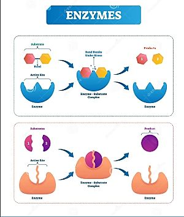
Characteristics of Enzymes
Most enzymes are proteins, although a few RNA molecules (ribozymes) also exhibit catalytic activity.
They are highly specific, with each enzyme acting on a particular substrate.
They remain chemically unchanged after the reaction and can be reused.
They function efficiently under mild conditions of temperature and pH.
Their activity can be regulated according to the needs of the cell.
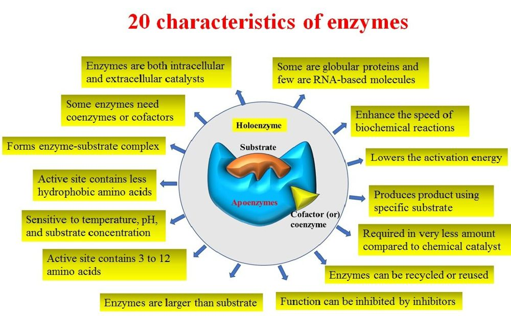
Why are Enzymes Called Biological Catalysts?
A catalyst is a substance that increases the rate of a chemical reaction without being consumed during the process.
Chemical reactions require a certain amount of energy to begin. This initial energy barrier is known as the activation energy.
Enzymes reduce this activation energy, making it easier for reactant molecules to be converted into products.
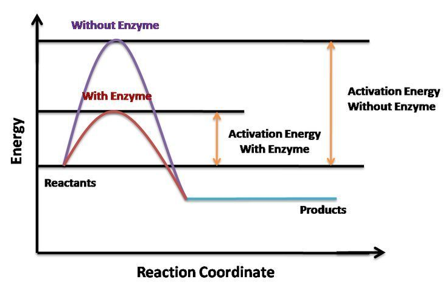
Structure of an Enzyme
Enzymes possess a highly specific three-dimensional structure. This structure enables them to recognize and bind only to particular molecules.
Every enzyme contains a region known as the active site. The active site is a small pocket or groove where the substrate binds and undergoes a chemical transformation.
Because the active site's shape is highly specific, only molecules with the correct structure can bind successfully.
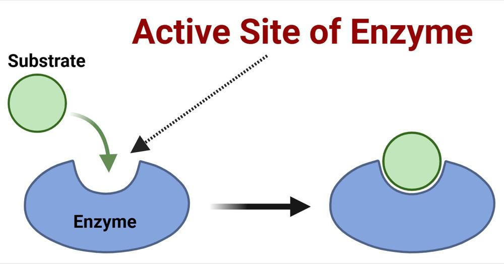
Figure
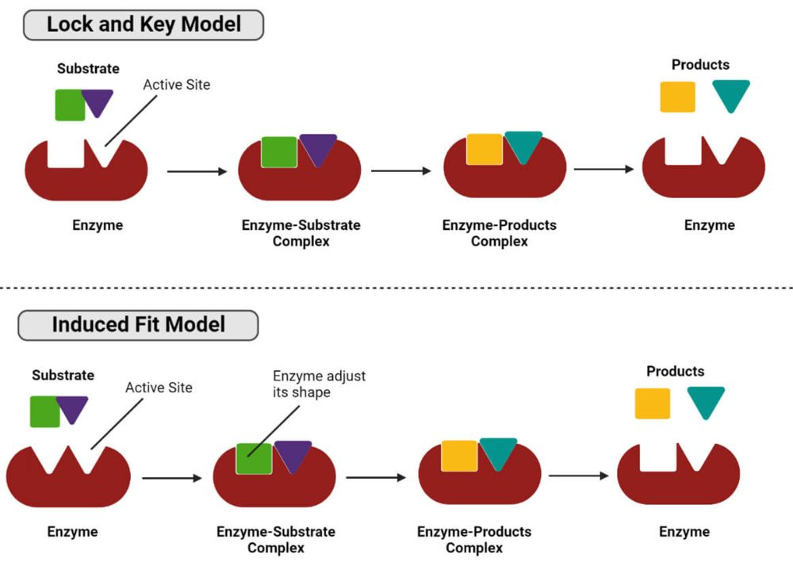
Mechanism of Enzyme Action
Lock-and-Key Model
According to this model, the enzyme's active site has a rigid shape that perfectly matches the substrate, just as a specific key fits only one lock.
Only the correct substrate can bind to the enzyme and undergo the reaction.
Although this model explains enzyme specificity, it does not account for the flexibility observed in many enzymes.
2. Induced-Fit Model
According to this model, the enzyme is flexible rather than rigid. As the substrate approaches, the active site undergoes slight structural changes to fit the substrate more closely.
This conformational adjustment improves binding efficiency and increases the reaction rate.
The induced-fit model is widely accepted because it explains the dynamic nature of enzyme-substrate interactions.
Enzyme Classes
Enzyme Class
Function
Example
Oxidoreductases
Oxidation–reduction reactions
Catalase
Transferases
Transfer functional groups
Kinases
Hydrolases
Hydrolysis reactions
Amylase
Lyases
Addition or removal of groups
Decarboxylase
Isomerases
Rearrangement of molecules
Phosphoglucose isomerase
Ligases
Join molecules together
DNA ligase
Applications of Enzymes
Medicine
Diagnostic tests (e.g., blood glucose estimation)
Drug development
Treatment of enzyme deficiency disorders
Food Industry
Cheese production
Bread making
Fruit juice clarification
Brewing
Environmental Applications
Wastewater treatment
Bioremediation
Biodegradation of pollutants
More notes
3.1 Enzymes as biological catalysts
Consider a biochemical reaction under physiological temperature, pH, and aqueous conditions, which left to itself is likely to take a relatively long duration, say hours or even days to reach equilibrium. Such a reaction might not be useful to a microorganism that needs to conduct metabolism fast for survival and reproduction. Also, considering the diversity of biochemicals and pathways involved in organisms, many wasteful side reactions are possible making cellular metabolism an energy inefficient process. Nature has evolved Biological catalysts termed as “enzymes” to_regulate_the biochemical reactions of cells and organisms. As the definition of catalyst suggests, enzymes facilitate biochemical reactions, but are not consumed in the reaction and emerge unmodified, thereby allowing them to be recycled for the next round of reaction. In these biochemical reactions, the reactants on which these enzymes act are termed as “substrates”. The enzyme facilitation involves regulating (increasing) the rate or velocity of the biochemical
} reactions as well as channelizing the substrates through useful pathways and preventing unwanted side reactions. This helps the cells and organisms to prioritize their needs for survival and reproduction as well as conserve energy and precious biochemicals.
Most enzymes are proteins, with the exception of non-proteinaceous enzymes such as ribozymes. Proteins comprising of amino acid residues linked through peptide bonds have complex tertiary and quaternary structures and this provides them with the structural features necessary to act as a catalyst. They work in aqueous solutions under mild pH and temperature conditions and are capable of increasing the reaction rates when compared to uncatalyzed reactions. They work in tandem with each other to catalyze and tegulate key biochemical processes.
A classic example of enzymes are proteases, which catalyze the reverse of peptide synthesis. An example is shown below which depicts the reversible hydrolysis of peptide bond between two amino acid residues of a dipeptide
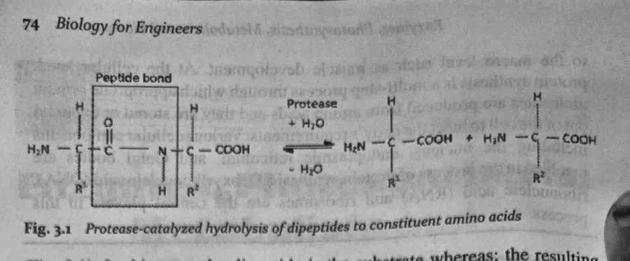
(Fig. 3.1). In this case, the dipeptide is the substrate whereas; the resulting free amino acids are the products. The equilibrium of the reaction exists far to the right, with the products dominating the reaction mixture.
Naming and classification of enzymes: Most enzymes as ee after their substrate they act on and have their names ending with “ase’ For e.g. urease catalyzes the hydrolysis of urea. Some enzymes have their names based on either their broad functionality or the source of the enzyme. For ais ft proteases, papain and bromelain are named after their source, papaya (Carica t papaya) and pineapple (bromeliaceae family) respectively.
To prevent any ambiguities, the Enzyme Commission of the TUBMB (International Union of Biochemistry and Molecular Biology) has adopted a classification system. In this system, each enzyme is provided with a systematic name and divided into 6 classes: oxidoreductases, transferases, hydrolases, lyases, isomerases and ligases. They are further sub-classified and provided with a unique 4 number Enzyme Commission number (E.C. number) that indicates the class, sub-class efc. that go onto uniquely identify each enzyme in the database. For e.g., the E.C. number for papain is “3.4.22.2” with first number, “3” denoting “hydrolyases” class and the second number, “4” sub-classifying it as a hydrolyases that specifically acts on peptide bonds (peptidases). The third number, “22” denotes a peptidases that act with a cysteine endopeptidase mechanism and the last number, “2” denotes the specific cysteine endopeptidase, papain. Enzymes are located in cell cytoplasm, mitochondria, tissues and body fluids. Enzymes can be also classified in many ways: intra and extracellular, soluble and insoluble etc.
3.2 Significance of enzymes
(i) Catalytic power (reaction rate): An important question in chemical reactions is: What is the driving force for a reaction to proceed from reactants to products? From a chemical thermodynamics point of view, as long as the free energy of products is lower than that of the reactants, i.e., the change in rr ae Enzymes, Photosynthesis, Metabolism and Bioenergetics 75 eo free eneTBY: AG (= Gyre ~ Grexcans) i8 negative, the reaction is feasible. AG | isa thermodynamic concept that defines the usable energy available froma = chemical process and has the units of joules/mole. However, thermodynamics i! goes not take into account the transition states the reactants have to pass | ¢nrough before they form the products, The above equation shows that substrate, S in the presence of enzyme, EB has to £0 thorough an activated high energy unstable transition state, Pes pefore it forms the products.
A better example is the splitting of disaccharide lactose (substrate) into its constituent monosaccharides, glucose and galactose (products) by the enzyme lactase (Fig. 3.2a). The reaction coordinate is a measure of the progress of the reaction from the reactants to the product through various transition states. Figure 3.2a shows that the conversion of reactant to products proceeds with the formation of at least one high energy transition state which imposes an “energy barrier” for the reactants. To surmount this barrier, the reactants have to acquire a critical energy, called “activation energy” and form an energy rich transition state before forming products. Activation energy (joules per mole) can be defined as the minimum energy required for initiating a chemical reaction.
Fig. 3.2. A schematic representation of the free energy vs. reaction coordinate plot for hydro-
lysis of lactose to glucose and galactose in the absence (a) and presence (b) of the enzyme, lactase. The plots show that the enzymatic-catalysis lowers the activation energy and facilitates the formation of the transition complex needed to drive the reaction to product formation.
At any given instant, only a fraction of the reactant molecules in a chemical reaction are likely to have sufficient activation energy to surmount the barrier. Hence, the reaction rate would be relatively slow. In the case of
: .ctions, donate and acc:
Enzymes, Photosynthesis, Metabolism and Bioenergetics 77 Active ite sieeve | | Active cysteine | | t-domain —/ GOP. f \ Jay f-domain oe Paw-=
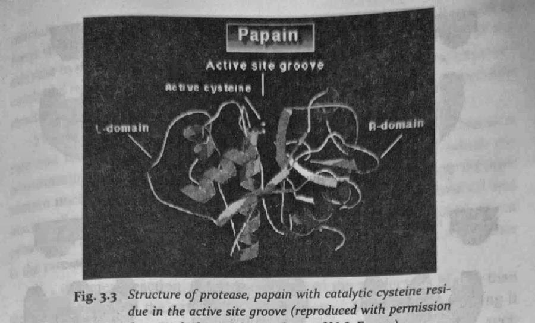
from Prof. Thierry Moreau, Inserm U618, France) regio-specificity also. This specificity also prevents unnecessary sidereactions, formation of by-products and waste of energy. Hence, a combination of steric complementarity, covalent and non-covalent interactions serve to provide aconcerted effect that optimizes the orientation of specific substrates and lowers the activation energy to produce high reaction rates. The above discussion suggests that a key requirement for enzyme catalysis is ability of the substrate molecule to complement the shape of the cleft on the active site. This led to the postulation of the “lock-and-key” hypothesis in 1894 (figure 3.4A). According to this hypothesis, enzyme specificity arises most probably by the ability of the enzyme to accommodate the substrate in the same way that a lock accommodates the key specific for it, This hypothesis explained the specificity part, but did not explain much about how this aids the formation of the intermediate transition state complex. It was until 1958 that the “induced-fit model” was used to explain this phenomenon (Fig. 3.4B). This model postulated that the merely fitting the right rigid key in the lock by itself was not sufficient and that the substrate needs to induce a structural reconfiguration of itself as well as the enzyme so as to form an enzyme-substrate complex. This enzyme-substrate complex would distort or orient the substrate to closely approximate the structure of the transition state complex The specificity of enzymes varies. Some enzymes have absolute specificity and can catalyze only one substrate such as protease Lys-C which cleaves peptides at the carboxy terminal of lysine residues. Some enzymes
Enzymes, Pho; | synthesis, Metabolism and Bioenergetics 79 | ts can either move back to f eo jucts. The prod orm reactants again or move forward to — ] fo the products. Products can also utilize the catalyti ar ot the ! to surmount the activation barrier lytic pow i a7) ed reaction rate enhancement i and form reactants. Thus, enzyme- | cotaly ent is valid for both directions in a reversible it ts equilibri Portant concept of difference between reaction i || ae and reat a ee rium. Equilibrium is the steady state at which the | | concentrations rae eis and Product species in a reaction mixture 't | email unchanged with time. This occurs when the rate of the forward and \ | packward saat a eet An uncatalyzed reaction left to itself, when | provided with enough time will eventually attain equilibrium. Reaction rate } isthe rate of (dis)appearance of a species in a reaction mixture. ical reaction, i Pan Ie chem ‘ n, if the free energy of the products is higher than ipat of the reactants, the net change in free energy, AG is positive making it thermodynamically unfavorable (Fig. 3.5). Enzymes cannot make such reactions favorable. On the contrary, if the AG is negative for a reaction, enzymes cannot convert this thermodynamically favourable reaction to an unfavorable one. Enzymes cannot alter the thermodynamically dictated feasibility and the final equilibrium established in biochemical reactions. Enzymes can lower the activation energy and enhance the reaction kinetics, ie reaction rate at which the equilibrium is attained. Reaction Kinetics Vs. Thermodynamics
/ | c, \, Reaction Kinetics = Activation Energy (E,) = How Fast ? Thermodynamics = Net Change in Free Energy (AG) = Spontaneous ? Reaction Coordinate
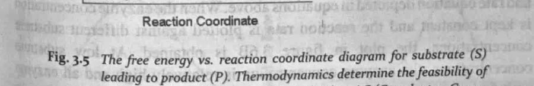
areaction. Reactions are feasible only when AG (Gproducts - Greactants) is negative. In the absence of an activation barrier, this reaction will be spontaneous. Catalysts (enzymes) lower the activation barrier and determine the reaction rate.
4 zymes, Photosynthesis, Metabolism and Bioenergetics 81 ay Pee" TORIES eer pas of Eneyme Kinetics Enzyme Concentration, [E] SRR Wersrey seme ne } f ‘Substrate Concentration, [S] Hl fig. 3° Effect of Enzyme (A) and Substrate (B) concentrations of reaction rate 1 | a cernin point, increase in substrate con concentration leads to saturation of the i . ayuihe enzyme active sites with no further increase in reaction rate reat (iii) Effect of temperature on enzyme activity: When the temperature ipreases inasystem, it Tead s to the increase in the kinetic energy and internal sjergy of the molecules (Fig, 3.7), In an enzyme-catalyzed system, this leads we more energetic collisions as well as increased frequency of collisions petween Substrates and enzyme molecules. The energy from such collisions cairin turn be converted to chemical potential energy and used to offset the activation energy needed to attain the transition states. Hence a moderate incTeaSe in temperature Teads to increase in ‘the Teactionc ratestaeeel ream figure 3.7A until a maximum is reached. ha This increase in temperatures also leads to increase in the internal energy of the molecules. At higher temperatures, the high internal energy can be converted to chemical potential energy and used to break the fragile noncovalent bonds in the tertiary and quaternary structure of enzymes. This would destabilize the enzyme structure leading to thermal “denaturation” i.e. loss of the enzymatic activity.
(iv) Effect of pH on enzyme activity: pH of a solution is a measure of the hydrogen ion concentration, [H*] in a system. This affects the ionization Temperature, °C pH r Rig. 3-7 Effect of Temperature (A) and pH (B) on reaction rate f state of charged residues in the amino acid residues of proteins. The aming _ functional groups of basic amino acids (lysine, arginine, and histidine) ang the carboxylic acids of acidic amino acids (aspartic acid and glutamic acid) can be protonated and deprotonated depending on the pH of the solution. Fo, e.g., at pH 7, the carboxylic acid side chains of both aspartic acid and glutami, acid are deprotonated, whereas at pH 4, aspartic acid is deprotonated ang glutamic acid is protonated.
This change in ionization status leads to alterations in the ability of the protein to form ionic bonds necessary for its structural integrity. This leag, to altered specificity, poor binding with its natural substrate or eye, complete denaturation of the protein. The pH can also similarly affect the shape and/or ionization status of the substrate leading to its poor binding with the enzyme. Each set of enzyme and substrates have a unique py optimum and moving away from this pH values results in loss of activity as comm ngaeo TS: ie aye
ae O- et al., Reproduced by permission of Bei Garland Science/Taylor & Francis — Books, Inc. i
si Enzymes, Pho 4 synthesis, Metabolism and Bioenergetics 83 ect of inhibito : id * di oS on enzyme activity: Inhibitors are molecules or hat hinder or terminate the catalytie-q ig. 3.9 jon jon can be classified into two toe mney SE eee (Fig. 3. ). orm ple inhibiti types: irreversible and reversible. ible nbition can be fy patel —— overs ssive, and. non-competitive | tther subdivided into competitive, aco , mpetitive inhibitors, Competitive inhibitor Noncompetitive inhibitor
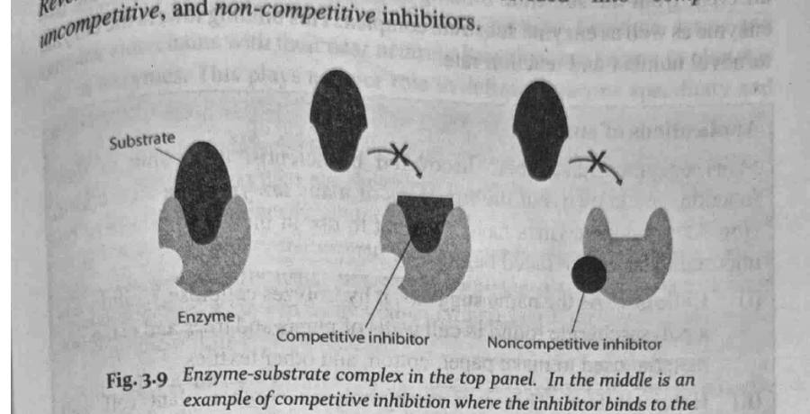
active ra preventing access to the substrate and in the bottom panel Bee illustration of a noncompetitive inhibition where the inhibitor can bind to the enzyme and prevents the substrate from accessing the active site.
Irreversible inhibition: Inhibitors in this category resemble the substrate gmeturally with similar molecular geometry providing them the ability to intéract with the enzyme active site. The interaction can be covalent or noncovalent and is strong enough to bind irreversibly with ihe enzyme and destroy its catalytic properties. An interesting example is the action’ of ailibiotic penicillin. Penicillin is an irreversible inhibitor of transpeptidase enzyme involved in bacterial cell wall synthesis. Penicillin mimics the natural Dalanine-D-alanine dipeptide substrate binding covalently to the active site of transpeptidase. This prevents synthesis of rigid cell walls and promotes bacterial cell lysis. Penicillin and its analogs are therefore important antibacterial drugs.
Reversible inhibition: Reversible “competitive” inhibitors have similar geometry as substrates and are able to compete with them for formation of theéizyme-substrate complex. The formation of the enzyme-inhibitor complex is reversible but it lowers the catalytic rate as the proportion of Substrates bound to enzymes is reduced.
Inreversible “uncompetitive” inhibition, the inhibitor is unable to bind to free enzyme by itself, but can bind once the enzyme-substrate complex is
— *uorm raze 7 eithl) Seanaagen ue ‘% latest Use tiereatone 7* 3.4 MECHANISMS OF ENZYME ACTION a The binding of the substrate to the active site is aided by covalent and noncovalent interactions. The covalent interactions involve cleavage™and~ formation of bonds between the substrate and the amino acid residues in the active site cleft. The chemistry behind this can be divided into the following 4 types: / Ae oy hie aie eae (i) General acid-base catalysis: The intermediates formed in chemical reactions may be charged making them unstable and revert back to fom
’ Enzymes, Photosynthesis, Metabolism and Bioenergetics 4 bs | i gat shai ete heed Intermediate by donating or wits i | on from molecules other than water) will facilitate their transformation it | Pn In enzyme-catalyzed reactions, this role is played by precisely oa, oP jctive site amino acid residues which can donate and accept protons. a | seri. gn, cysteine, histidine, serine and 1] i | ine side-chains wi! their hear neutral pKa values are known to play this ie & Py enzymes. This plays a major role in defining enzyme specificity and | mr yt activity: 4 | on @ Covalent catalysis: This involves the formation of a temporary_but dl | able covalent t between the enzyme and the active site residues. This i | wise jhe activation energy leading to further reactions which releases the pee TEE the enzyme. Amino acid residues that can form a jeopile are usually used in enzyme catalysis. Papain which utilizes a 4 jeophilic thiolate ion to form a covalent bond with the peptide backbone mesa OF this typé of mechanism.
ii) Metal ion catalyst: Metals attached to substrates or active. site sides 2 1 play. a role in enzyme catalysis. With ionic interactions they abilize charged fransition States. They can also mediate oxidation-reduction reactions by changing the oxidation states of the metal ions. Some of the ions Enzymes usually use a combination of the mechanisms described above for catalysis. These are explained further with 4 specific examples described | (i) Proteases: As explained earlier, proteases are enzymes that catalyze the hydrolytic cleavage of peptide bonds in proteins and peptides. Although, peptide bond hydrolysis is thermodynamically favored, the reaction is too slow for quick turnover. Turnover refers to the rate at which unwanted proteins are degraded to constituent amino acids and recycled to form new Proteins. A quick turnover is necessary to match the fast metabolic Tequirements. Proteases are also needed to break down proteins and peptides in food before they are absorbed in the intestines. They also play a role in Tegulating the activity of many other enzymes. For e.g., inactive precursor — is processed by proteases to form mature insulin. Proteases are a ensure all these by lowering the activation energy to catalyze the tion product peptides.
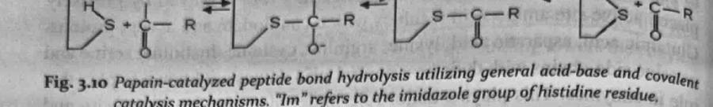
catalysis mechanisms, “Im” refers to the imidazole group of histidine residue,
In papain, during peptide bond hydrolysis, a proton is donated from the sulfahydrl group of a catalytically active cysteine residue to an adjacent imidazole group of a histidine residue in the active site (general acid-base is followed by a nucleophilic attack by the thiolate anion on the carbonoyl
K group carbon of the peptide bond \ (covalent catalysis) to form an unstable tetrahedral intermediate.
The intermediate breaks down followed by hydrolysis to release the Fig. 3.11 Structure of papain. Image from the 4 peptides and donate the proton back RCSB PDB (www.pdb.org) of PDB ID to the cysteine and regenerating the IPPN, R. W. Pickersgill, R.W. Harenzyme. Hence, protease papain uses ris: Ke Gamnag (1992), Suctury fh é i Monoclinic Papain at 1.6 Angstroms two mechanisms: (i) acid-base and Resolution, Acta Crsytallogr., Sect. (ii) covalent catalysis. This example B 48: 59-67. also shows how enzyme-substrate H complex leads to the intermediate formation that can lower activation energy to drive the reaction forward.
(ii) Carbonic anhydrase: In mammals, aerobic metabolism in tissues results in the formation of carbon dioxide, a major end product. This carbon dioxide needs to be removed rapidly from the system to prevent harmful accumulation. This is accomplished by transferring the carbon dioxide to the blood, where it is converted to a soluble form and transported to the lungs. In the Jungs it is exhaled in exchange for oxygen. The solubilization of carbon dioxide in blood occurs due to its conversion to carbonic acid. Carbonic acid isa elatively weak acid and is formed by the reversible hydration of carbon dioxide as shown below:
Enzymes, Photosynthesis, Metabolism and Bioenergetics 87 it | | ever, the carbonic acid can be reversibly deprotonated to form | Hl | pe jon. These steps are coupled to facilitate the transport in blood tm | Peal ation of carbon dioxide as the blood passes through the lungs. This ad sd oe reaction 1S catalyzed rapidly to rates as high as million times per ii | “om pet enzyme molecule by carbonic anhydrase. Carbonic anhydrase hin | enn inc cofactor coordinated to imidazole side chains of 3 histidines in the | ive Sl : bias tigiesd : av? zinc atom coordinated with imidazole side groups of 3 histidine 1 a se in carbonic anhydrase is able to bind with a water molecule (Figs. sid 4 3:13)- This leads to polarization of the water molecule and 42 os ment of @ slight negative charge on the oxygen atom. This facilitates ger yonation of the water molecule and generation of a negatively spe oe? by droxyl ion coordinated to the positively charged zinc atom. The
(www. pdb.org) of PDB ID 1CAz, A.E.
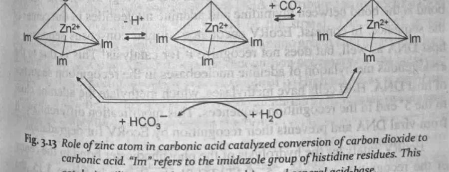
carbonic acid. “Im” refers to the imidazole group of histidine residues. This catalysis utilizes 2 mechanisms: metal-ion and general acid-base.
S4
Nucleic acid structure-function relationships
2 marks
This concept is known as the structure–function relationship.
4 to 5 marks
Write the definition, then any 4 or 5 of these points, one line each: What is a Structure–Function Relationship?; Comparison.
12 to 13 marks: answer in this order
What is a Structure–Function Relationship?
Comparison
Finish with a labelled diagram or table, one real example, one application and a one-line conclusion.
Practice questions
2 marks: State one structure-function relationship of DNA.
5 marks: Compare DNA and RNA.
12 marks: Explain how the structure of DNA and RNA determines their functions.
Complete notes
What is a Structure–Function Relationship?
The shape, chemical composition, and organization of a biological molecule determine how it behaves inside a living cell. This concept is known as the structure–function relationship.
DNA and RNA illustrate this principle exceptionally well. Although both are nucleic acids composed of nucleotides, small differences in their structures enable them to perform entirely different biological functions.
Comparison
Feature
DNA
RNA
Full Name
Deoxyribonucleic Acid
Ribonucleic Acid
Sugar
Deoxyribose
Ribose
Strands
Double
Usually single
Nitrogenous Bases
A, T, G, C
A, U, G, C
Stability
Highly stable
Less stable
Function
Long-term genetic storage
Protein synthesis and regulation
Cellular Location
Nucleus (primarily)
Nucleus and cytoplasm
Figure
The structural differences between DNA and RNA explain why they perform different biological roles.
DNA is chemically more stable because it contains deoxyribose sugar and is double-stranded. This stability makes DNA ideal for storing genetic information throughout an organism's lifetime.
RNA contains ribose sugar and is generally single-stranded, making it less stable but much more flexible. As a result, RNA is ideal for short-term information transfer and protein synthesis.
S5
BLAST tool for sequence database queries
2 marks
BLAST stands for Basic Local Alignment Search Tool.
4 to 5 marks
Write the definition, then any 4 or 5 of these points, one line each: BLAST; Significance of BLAST; BLAST workflow; BLAST Metrics; Types of Blast Program; Video demo of BLAST.
12 to 13 marks: answer in this order
BLAST
Significance of BLAST
BLAST workflow
BLAST Metrics
Types of Blast Program
Video demo of BLAST
Finish with a labelled diagram or table, one real example, one application and a one-line conclusion.
Practice questions
2 marks: What does the E-value mean in BLAST?
5 marks: Explain the BLAST workflow.
12 marks: Describe BLAST, its significance, workflow, output metrics and types of BLAST programs.
Complete notes
BLAST
BLAST stands for Basic Local Alignment Search Tool. It is a sequence similarity search program developed by Stephen Altschul and colleagues at the National Center for Biotechnology Information (NCBI) in 1990.
The primary purpose of BLAST is to compare an unknown biological sequence with sequences stored in large public databases. Instead of comparing entire genomes base by base, BLAST searches for local regions of similarity, making the search much faster and computationally efficient.
Significance of BLAST
It enables researchers to:
Identify unknown genes.
Predict protein functions.
Compare genomes from different organisms.
Study evolutionary relationships.
Detect disease-causing mutations.
Verify cloning and sequencing experiments.
Without BLAST, many modern genomic studies would require enormous computational effort and time.
Figure
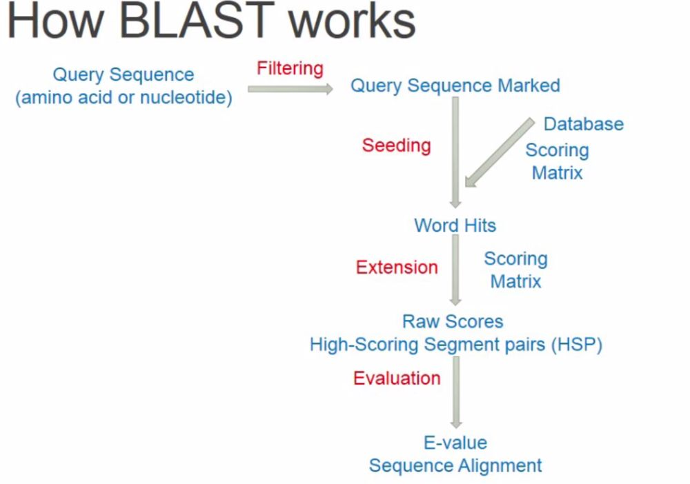
BLAST workflow
Although BLAST is a sophisticated algorithm, its basic workflow can be understood through a few simple steps.
Suppose a scientist has sequenced a fragment of DNA from an unknown microorganism.
Step 1: Input Sequence
The user enters a DNA, RNA, or protein sequence into the BLAST program.
For example,
ATGCGTACCTGATCGGATC...
This sequence is known as the query sequence.
Step 2: Database Search
BLAST compares the query sequence against millions of sequences stored in biological databases such as GenBank.
Instead of comparing every nucleotide individually, BLAST first identifies short matching words (seeds) and then extends these matches to produce longer alignments.
This strategy greatly reduces computational time.
Step 3: Sequence Alignment
BLAST aligns the query sequence with similar database sequences.
The alignment identifies:
Matching nucleotides or amino acids
Mismatches
Insertions
Deletions
The greater the similarity, the higher the alignment score.
Step 4: Ranking Results
BLAST ranks all matching sequences according to statistical significance.
The most similar sequences appear at the top of the results.
Each result includes:
Sequence identity
Query coverage
Alignment score
E-value
Organism name
BLAST Metrics
Query Coverage
Query coverage indicates how much of the query sequence aligns with the database sequence.
Higher query coverage generally indicates a more complete match
Percentage Identity
Identity measures the percentage of identical nucleotides or amino acids between two aligned sequences.
For example, 98% identity means 98 out of every 100 positions are identical.
Alignment Score/ Max Score
The alignment score reflects the quality of the sequence match.
Higher scores indicate stronger similarity.
Total Score
The sum of the scores from all aligned regions (HSPs) between the query and the same subject sequence.
E-value (Expectation Value)
The E-value is one of the most important statistics in BLAST.
It estimates the number of matches that could occur by chance in the database.
A lower E-value indicates a more reliable match.
Acc. Len (Accession Length)
The total length of the database (subject) sequence.
Types of Blast Program
BLAST Program
Query
Database
BLASTN
DNA
DNA
BLASTP
Protein
Protein
BLASTX
DNA
Protein
TBLASTN
Protein
DNA
TBLASTX
DNA
DNA (translated)
Video demo of BLAST
How to Use BLAST for Finding and Aligning DNA or Protein Sequences - YouTube
S6
Human Genome Project as big data genomics
2 marks
The genome is the complete collection of genetic material present in an organism.
4 to 5 marks
Write the definition, then any 4 or 5 of these points, one line each: What is the Human Genome?; What is the Human Genome Project?; Objectives of the Human Genome Project; Applications of the Human Genome Project.
12 to 13 marks: answer in this order
What is the Human Genome?
What is the Human Genome Project?
Objectives of the Human Genome Project
Applications of the Human Genome Project
Finish with a labelled diagram or table, one real example, one application and a one-line conclusion.
Practice questions
2 marks: What is the Human Genome Project?
5 marks: List the objectives of the Human Genome Project.
12 marks: Explain the Human Genome Project, its objectives and applications, and its role in big data genomics.
Complete notes
What is the Human Genome?
The genome is the complete collection of genetic material present in an organism. In humans, the genome contains approximately 3.2 billion DNA base pairs organized into 23 pairs of chromosomes.
These chromosomes contain nearly 20,000 protein-coding genes, along with many regulatory DNA sequences that control when and where genes are expressed.
Although every cell in the human body contains essentially the same genome, different cell types activate different sets of genes.
For example, liver cells express genes involved in metabolism, whereas nerve cells express genes required for signal transmission.
What is the Human Genome Project?
The Human Genome Project (HGP) was an international scientific research initiative launched in 1990 with the objective of determining the complete DNA sequence of the human genome and identifying all human genes.
Scientists from the United States, the United Kingdom, Japan, France, Germany, China, and several other countries collaborated on this ambitious project. After thirteen years of research, the project was successfully completed in 2003, two years ahead of schedule.
The Human Genome Project is regarded as one of the greatest scientific achievements of the twentieth century because it provided the first complete reference map of the human genome.
Its was the driving force behind the science of Genomics
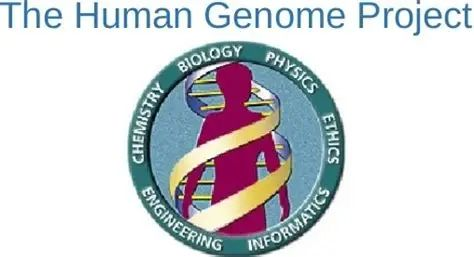
Objectives of the Human Genome Project
Technogies that enabled the genome Project
Database Management
Genome sequences are stored in specialized databases that allow researchers to retrieve genes, compare sequences, and analyze mutations efficiently.
Examples include:GenBank ,Ensembl
Algorithms
Algorithms are essential for:
DNA sequence assembly ,Pattern matching
Many of these algorithms are similar to string-matching techniques studied in computer science.
High-Performance Computing
Genome assembly requires billions of DNA fragments to be compared and arranged correctly. These computations are performed using parallel processing and high-performance computing systems.
Cloud Computing
Modern genome projects generate petabytes of data that are stored and analyzed using cloud platforms, enabling researchers worldwide to collaborate in real time.
Determine the complete sequence of the human genome.
Identify all protein-coding genes.
Develop technologies for rapid DNA sequencing.
Store genomic information in publicly accessible databases.
Improve computational tools for genome analysis.
Address ethical, legal, and social issues associated with genetic information.
Applications of the Human Genome Project
Medicine
Early diagnosis of inherited diseases
Cancer genomics
Prenatal genetic testing
Personalized medicine
Drug Discovery
Scientists can identify genes associated with diseases and develop drugs that specifically target those genes.
Agriculture
Genome sequencing has improved crop productivity, disease resistance, and nutritional quality.
Forensic Science
DNA fingerprinting enables accurate identification of individuals in criminal investigations and disaster victim identification.
Evolutionary Biology
Comparing genomes from different species helps scientists understand evolutionary relationships and trace the origin of organisms.